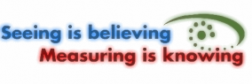

The OpenPIV project

OpenPIV is an initiative of scientists to develop a software, algorithms and methods for the state-of-the-art experimental tool of Particle Image Velocimetry (PIV) which are free, open source, and easy to operate.
OpenPIV is the successor of the well known URAPIV software - it is faster, more friendly and much more flexible.
OpenPIV is provided using Matlab, Python or 32bit Windows executable (based on C++ and Qt source).
OpenPIV users worldwide distribution
Matlab is a trademark of Mathworks Inc.
Qt is a trademark of Trolltech